2025, here and gone in a flash!
Happy to share that our first full year in Japan has been going pretty well, all things considered. We've been adapting to new work and schools, getting to know our town, and working (ever so slowly) to try to carve out a little place of our own.
With family and friends beside us, we've been finding our way!
(through the Int'l Year of Quantum no less)
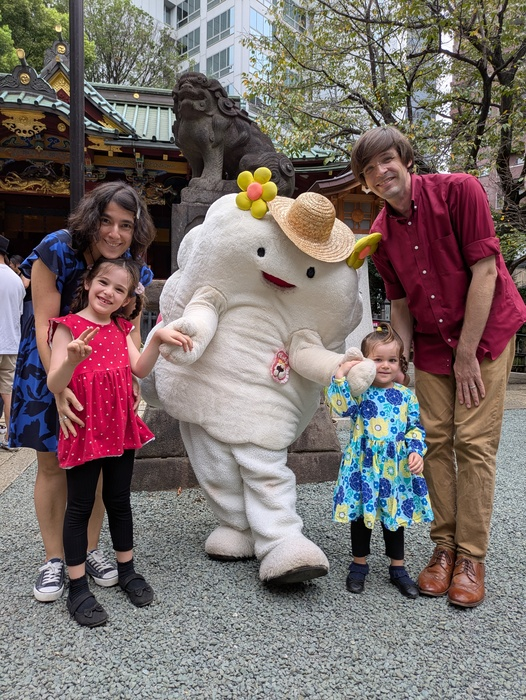
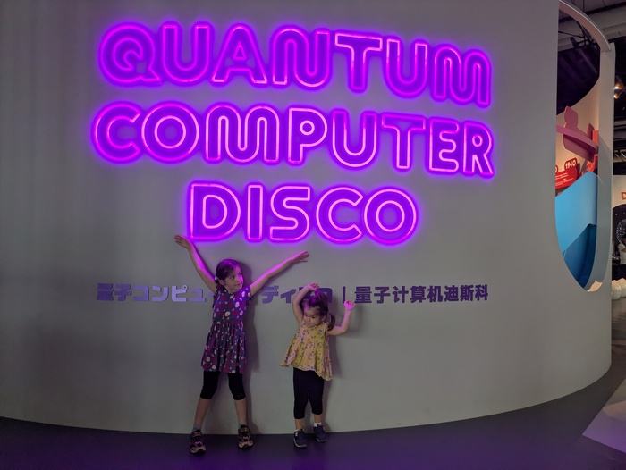
." style="padding-right:20px;">
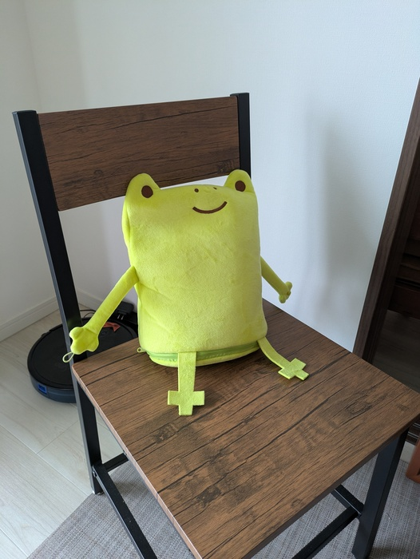
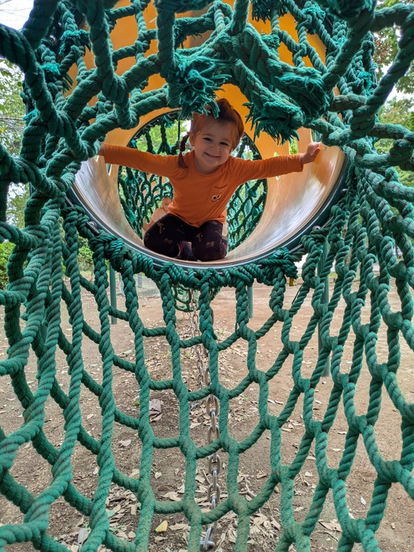
Not-So-Little Eda keeps getting less little ...
She has been growing and asserting her two-year-old will like never before! Eda's twos have been different from her sister's but certainly not terrible. After spending almost a year in local childcare, she's really picked up on a lot of the manner and language that surrounds her1. She's ditched the stroller for strolling the pavement of Tokyo at pace with the rest of us, which has been a refreshing change for everyone involved. She's also been putting her new language skills to the test charming locals and shouting "Are you done yet?" across the dinner table.
Excited to do literally whatever her sister is doing at the time, she too has picked up sticker art, watching Mister Roger's Neighborhood, and pretending to be a cat as pastimes.
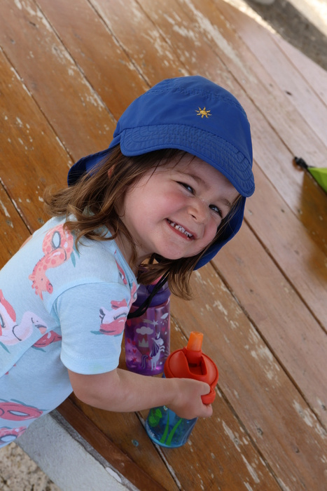
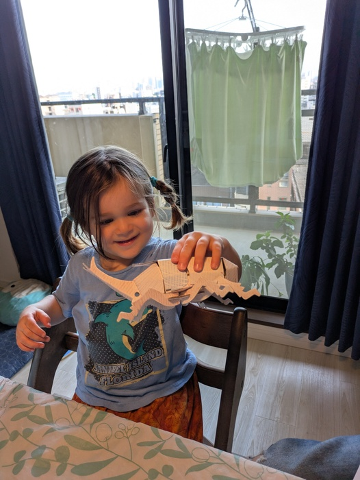
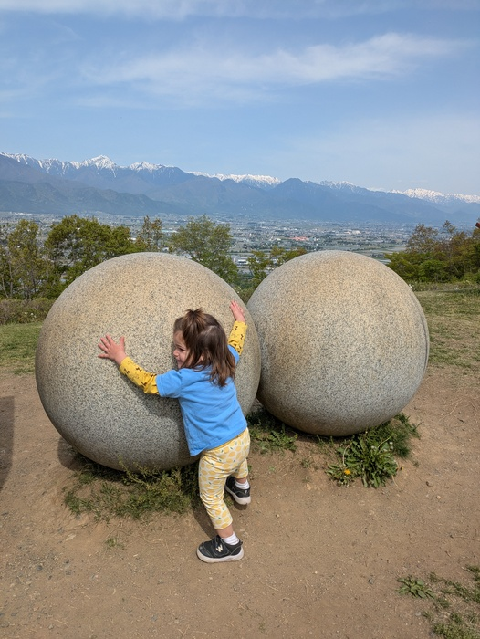
Alma continues to blossom.
While her love of blurry train pictures has mellowed a bit, she's been exploring the arts: drawing, painting, sewing, and folding. Her origami skills are quickly outpacing the rest of the family, and she has been known to fold a cat face on the train to hand to strangers. This year had her first run in with video games (Super Mario Bros 32), and she has been enjoying being able to choose what she wants to watch and play from a little folder of possibilities we've made for her. Despite all those possibilities, she's all too happy to choose Mister Roger's Neighborhood to share with her sister3.
Lately, Alma is a precocious participant in our family conversations; while her last year of preschool has been wonderful, it is clear that she's ready for the next step. Even so, she feels things deeply and continues to view her world through kind, wonder-filled eyes. We will do all we can to help her keep that as she steps into the wild world of elementary school!
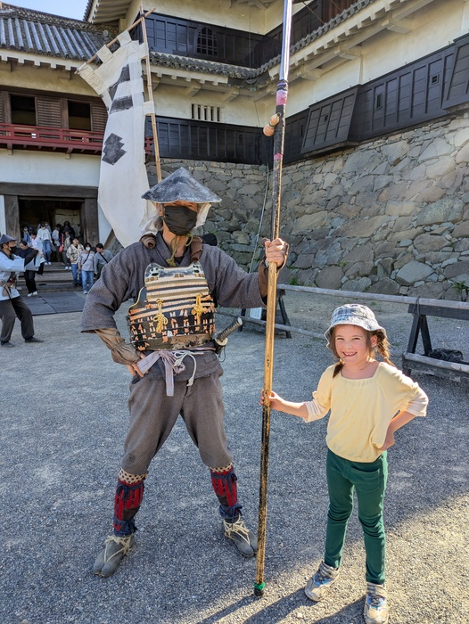
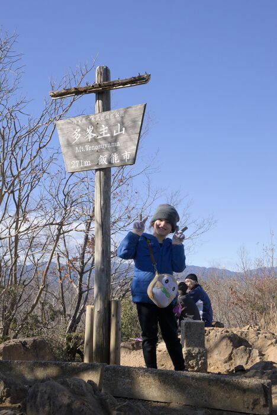
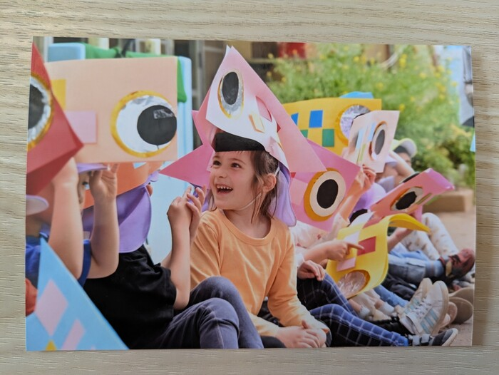
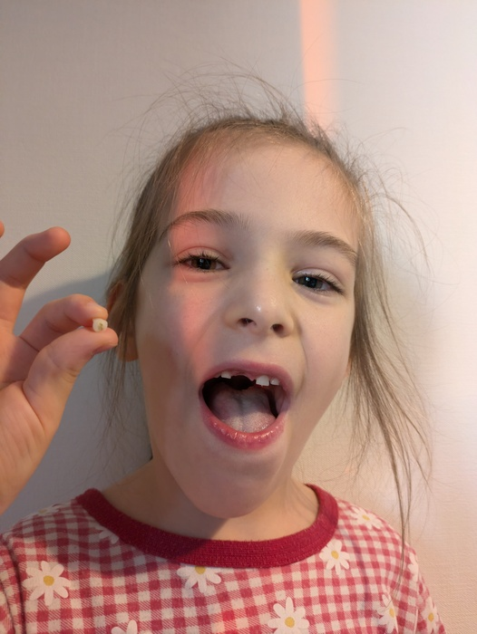
As for the rest of the Lysnes, we've been still a bit scattered honestly!
Our first full year in Tokyo went by like that. Inara is full-time in Japanese language school now and has been managing not only being a full-time student again but building up a social circle with poise. Nathan is still working with Quantinuum with projects and work continues apace. While the day-to-day is as busy as ever, we've managed a few trips around Japan4 and are eager to keep slotting in family travel as we can.
Even with life's crazy moments we've settled into a new rhythm. Yet even with these changes, we've been incredibly fortunate to have still spent many good times with family and friends -- old and new! Here's hoping we can look back this next year and find ourselves equally as fortunate.
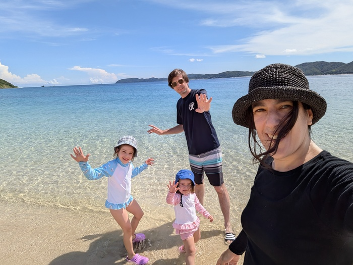
Below you'll find a few more highlights from here and there over the year. We're sending our warmest tidings and hope that things are well with you and yours as one year turns into another.
Here's to an even better New Year! 🎊
The (Tokyo) Lysnes
2025
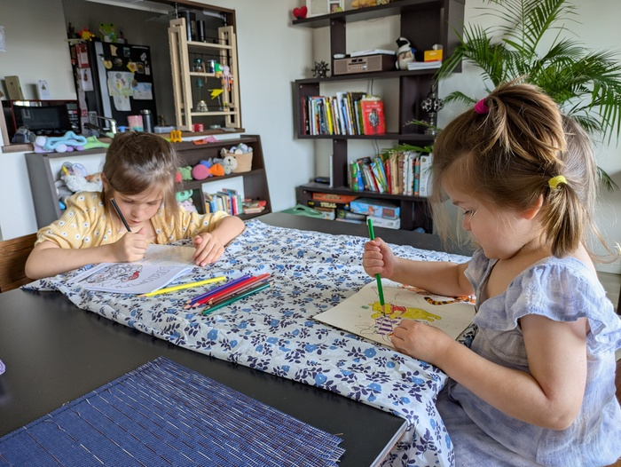
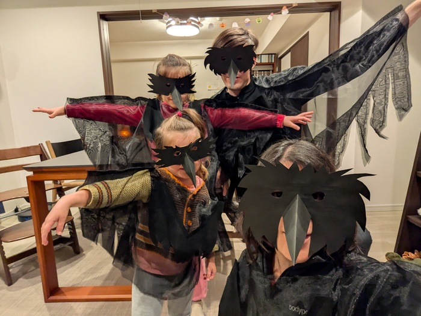
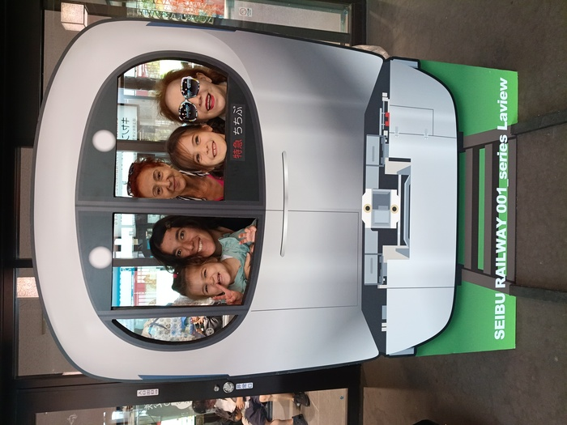
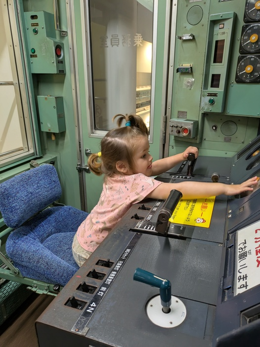
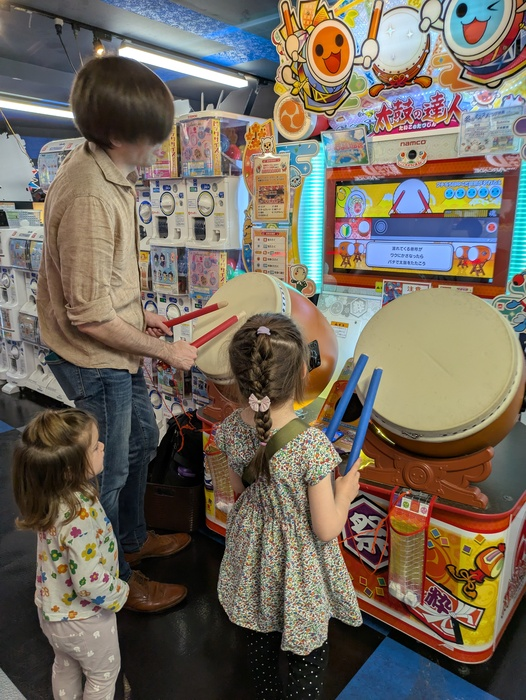
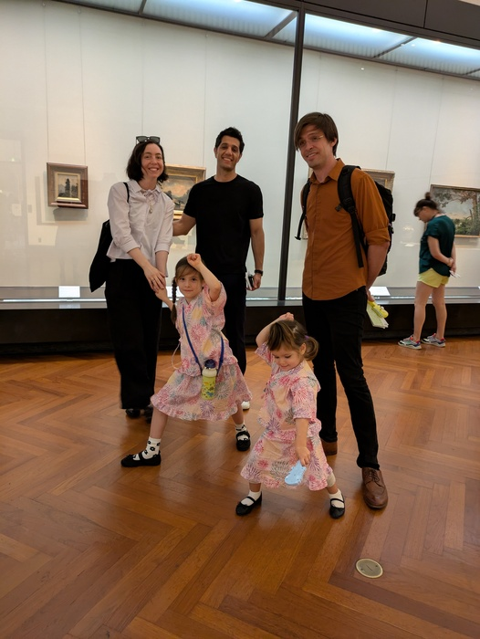
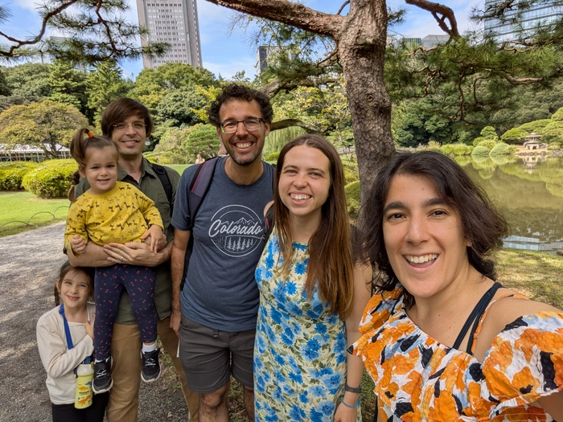
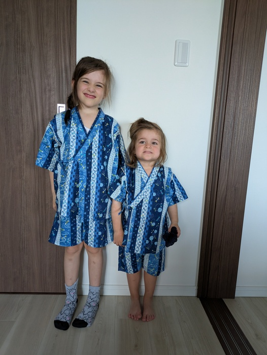
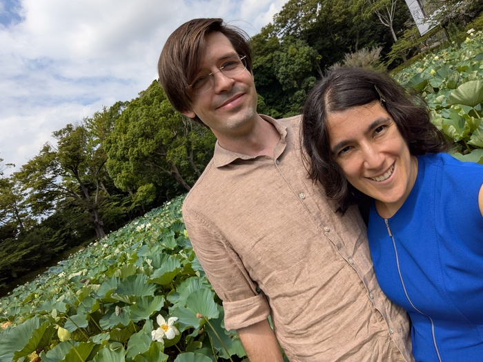
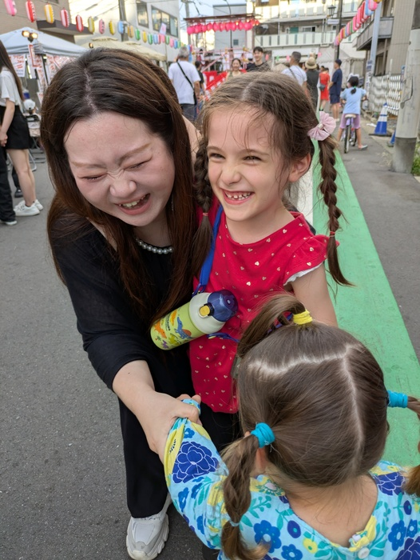
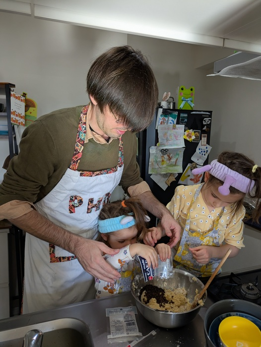
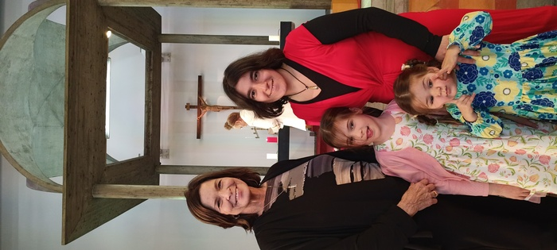
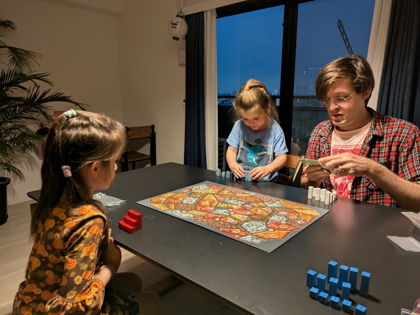
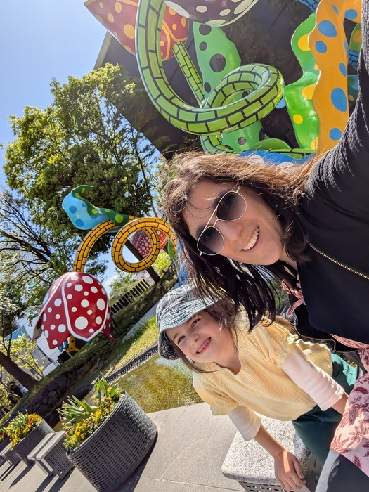
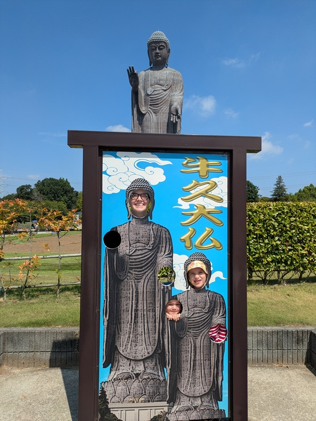
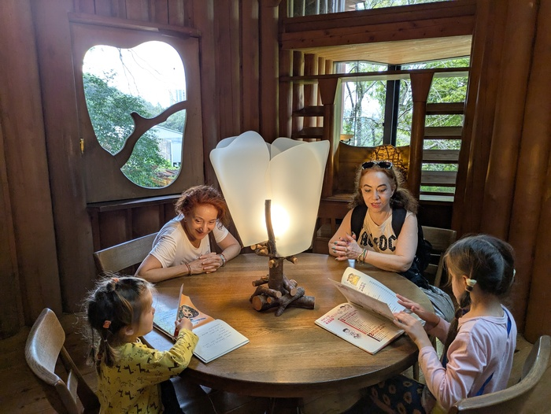
Back to Index
Background adapted from Nicky Christensen's CSS snow example.
Last update on 20260228.